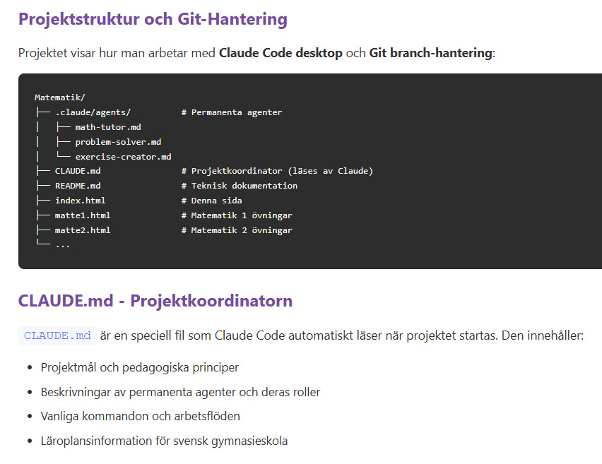

Om att skapa interaktivt lärandematerial med AI-verktyg
← Tillbaka till Startsidan 💻 GitHubKan generativ AI hjälpa oss att återuppliva och tillgängliggöra den kunskap som lärs ut i våra gymnasier? Det var frågan som startade detta projekt. Svaret? Ja – men resan dit är både fascinerande och utmanande.
Matematik är ett tryggt första steg. Till skillnad från samhällskunskap eller historia som förändras med tiden, förblir kvadratrötter och logaritmer desamma oavsett årtal. Men tanken är större än så: Vad händer om vi gör all gymnasiekunskap interaktiv och tillgänglig för alla, hela livet?
"Vi skulle alla tjäna på att genom hela livet kunna repetera, diskutera och förstå den grundläggande kunskap som förmedlas i våra skolor. Inte genom tunga läroböcker, utan genom lekfulla, interaktiva quiz och pedagogiska förklaringar."
Projektet använder en kombination av moderna AI- och utvecklingsverktyg:
Och här kommer den ärliga delen: Det tar tid att förstå hur allt hänger ihop.
När man börjar arbeta med Claude Code desktop, dess CLAUDE.md-struktur, permanenta subagenter, Git-branch-hantering och GitHub Pages deployment kan det kännas överväldigande. Speciellt om man, som jag, är van vid traditionell programutveckling.
Claude Code Desktop skapar automatiskt Git-branches (med claude/-prefix),
men skapar INTE automatiskt katalogstrukturer. Cursor ger visuell kontroll men
kräver manuell Git-hantering. CLAUDE.md är en kraftfull projektkoordinator,
men kräver noggrann struktur. Subagenter kan specialiseras, men måste designas rätt.
Det tar tid. Men det är tid väl spenderad.
En av de mest kraftfulla funktionerna i Claude Code är möjligheten att skapa permanenta subagenter med specifika roller. I detta projekt använder vi:
Projektstrukturen visar hur CLAUDE.md koordinerar tre specialiserade agenter
Varje agent har sin tydliga roll, sina kompetensområden och sina samarbetsprotokoll. CLAUDE.md fungerar som en projektkoordinator som Claude läser automatiskt när projektet startas.
Kärnan i projektet är interaktiva quiz-frågor som ger omedelbar feedback:
Detta är inte bara teknik – det är pedagogik. Genom att förklara varför fel svar är fel hjälper vi användaren att förstå vanliga missuppfattningar och bygga djupare förståelse.
"Ett quiz utan förklaring av fel svar är en missad lärtillfälle. Det är inte bara viktigt att veta vad som är rätt – det är minst lika viktigt att förstå varför något är fel."
Så här ser en typisk övning ut från start till mål:
Varje steg lär dig något nytt om både AI-verktygen och pedagogiken.
Detta projekt är bara början. Föreställ dig:
Kunskap som bara lever i klassrummet riskerar att glömmas bort. Men kunskap som är interaktiv, tillgänglig och rolig kan användas genom hela livet.
Vi lär oss inte en gång för alla. Vi lär oss genom repetition, genom att se koncept från nya vinklar, genom att testa vår förståelse. AI-verktyg kan hjälpa oss skapa dessa lärandemiljöer – inte som ersättning för lärare, utan som komplement som alltid är tillgängligt.
Några viktiga insikter från projektet:
Projektet är i aktiv utveckling. Nästa steg inkluderar:
Att arbeta med generativ AI för att skapa pedagogiskt material är både inspirerande och ödmjukande. Det går inte alltid smidigt – verktyg måste läras, strukturer måste förstås, och många commits måste göras.
Men när det fungerar, när du ser en interaktiv övning som ger omedelbar, pedagogisk feedback, när du inser att detta kan hjälpa någon att förstå ett koncept de kämpat med – då känns det värt det.
"Kunskap är inte bara kul – den är fundamental. Och nu har vi verktygen att göra den tillgänglig för alla."
Om du är nyfiken på hur projektet fungerar tekniskt, utforska gärna guiden för projektstrukturen eller kika på GitHub-repositoryt.
Och om du har idéer, synpunkter eller vill bidra – hör gärna av dig!
Kent Lundgren
Utforskare av AI-verktyg och pedagogiska möjligheter
📧 kent@kentlundgren.se |
💼 LinkedIn